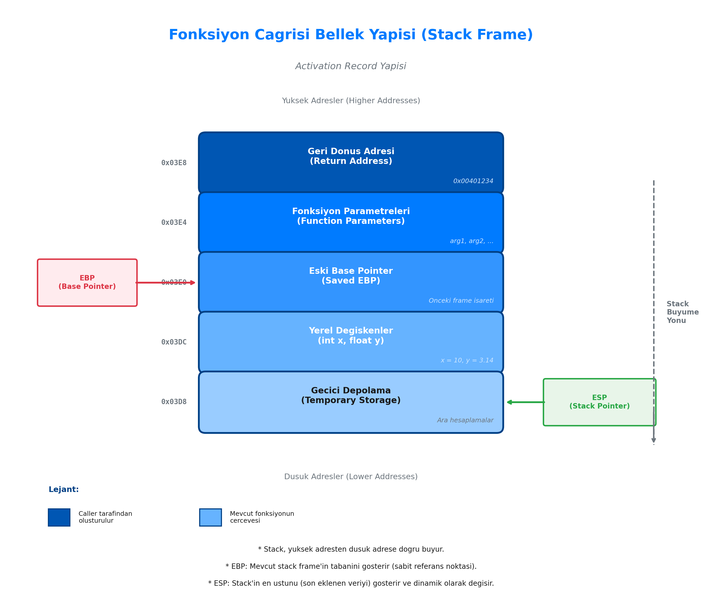
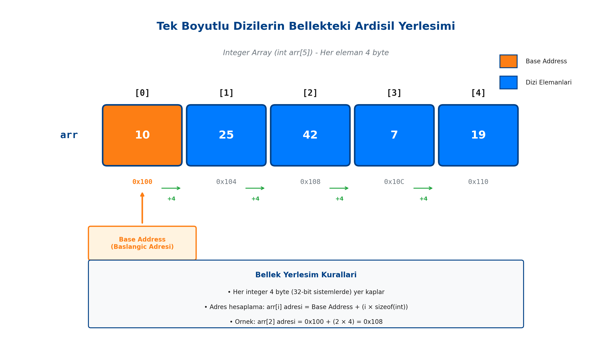
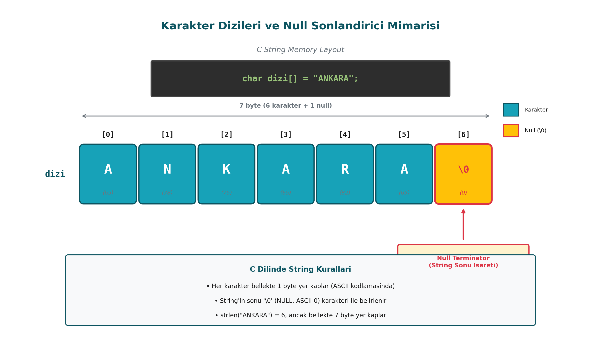

Modüler Programlama ve Veri Grupları
Kodun tekrar kullanılabilirliğini sağlayan fonksiyonların bellek (Stack) üzerindeki davranışları, "Call by Value" prensibi, verilerin bellekte ardışıl tutulmasını sağlayan diziler (arrays), matrisler üzerindeki mühendislik hesaplamaları ve metinsel verilerin (strings) C dilindeki alt yapısı akademik bir dille incelenmiştir.
1.1. Fonksiyonlar ve Modülerlik
Büyük ve karmaşık problemleri, yönetilebilir küçük parçalara (modüllere) bölme işlemine Modüler Programlama denir. C dilinde bu modüller "Fonksiyonlar" olarak adlandırılır.
1.1.1. Fonksiyon Tanımlama, Prototipler ve Kapsam (Scope)
Fonksiyonlar, belirli bir görevi yerine getirmek için tasarlanmış kod bloklarıdır. Kod tekrarını önler, okunabilirliği artırır ve hata ayıklamayı kolaylaştırır.
- Fonksiyon Prototipi: Derleyiciye, fonksiyonun gövdesi henüz tanımlanmadan önce dönüş tipini ve parametrelerini bildiren yapıdır. Genellikle
main()fonksiyonundan önce yazılır. - Kapsam (Scope): Değişkenlerin ve fonksiyonların programın hangi bölümünden erişilebilir olduğunu belirtir. Fonksiyon içinde tanımlanan değişkenler (Local Variables) sadece o fonksiyon içinde yaşar.
Örnek: Faktöriyel Hesaplayan Fonksiyon
#include <stdio.h>
// Fonksiyon Prototipi
int faktoriyel(int n);
int main() {
int sayi = 5;
int sonuc = faktoriyel(sayi);
printf("%d! = %d\n", sayi, sonuc);
return 0;
}
// Fonksiyon Tanimi
int faktoriyel(int n) {
int carpim = 1;
for(int i = 1; i <= n; i++) {
carpim *= i;
}
return carpim;
}
1.1.2. Parametre Aktarımı ve Bellek Yönetimi (Stack)
C dilinde fonksiyonlara parametre aktarımı varsayılan olarak Değer ile Çağırma (Call by Value) yöntemiyle yapılır.
- Call by Value: Fonksiyona değişkenin kendisi değil, değerinin bir kopyası gönderilir. Fonksiyon içinde yapılan değişiklikler, çağıran fonksiyondaki (main) orijinal değişkeni etkilemez.
- Activation Record (Stack Frame): Bir fonksiyon çağrıldığında, belleğin Stack (Yığın) bölgesinde o fonksiyona özel bir alan ayrılır. Parametreler ve yerel değişkenler burada tutulur. Fonksiyon bittiğinde bu alan bellekten silinir.

Örnek: Başarısız Swap (Yer Değiştirme) Girişimi
#include <stdio.h>
void swap(int a, int b) {
int temp = a;
a = b;
b = temp;
// Burada a ve b degisir, ancak bunlar sadece kopyadir.
// Fonksiyon bittiginde Stack'ten silinirler.
}
int main() {
int x = 10, y = 20;
swap(x, y);
// x ve y'nin degeri hala 10 ve 20'dir. Degisim gerceklesmez.
printf("x: %d, y: %d\n", x, y);
return 0;
}
1.1.3. Standart Kütüphane Fonksiyonları
C dili, tekerleği yeniden icat etmememiz için zengin bir standart kütüphane sunar. Bu kütüphaneler #include direktifi ile koda dahil edilir.
: Matematiksel işlemler için kullanılır.pow(taban, us),sqrt(sayi),sin(),cos()gibi fonksiyonları içerir.: Karakter analizleri için kullanılır.isdigit(ch)(rakam mı?),isalpha(ch)(harf mi?),toupper(ch)(büyük harfe çevir) sık kullanılanlardır.: Genel amaçlı fonksiyonlar, bellek yönetimi ve rastgele sayı üretimi (rand()) içerir.
1.2. Diziler (Arrays)
Değişkenler tek bir veri tutarken, diziler aynı veri tipinden birden fazla veriyi tek bir isim altında saklamayı sağlar.
1.2.1. Tek Boyutlu Diziler ve Bellekteki Ardışıl Yerleşim
Dizi tanımlandığında, RAM üzerinde ardışıl (contiguous), yani yan yana bloklar halinde yer ayrılır. Bu özellik, verilere indis (index) numarası ile çok hızlı erişilmesini sağlar.
- C dilinde dizilerin indisi 0'dan başlar.
int notlar[5];ifadesi bellekte5 * 4 byte = 20 bytelık bütünleşik bir alan ayırır.

Örnek: Sınıf Ortalaması Hesaplama
int main() {
int notlar[5] = {60, 70, 85, 90, 55};
int toplam = 0;
for(int i = 0; i < 5; i++) {
toplam += notlar[i];
}
double ortalama = (double)toplam / 5;
printf("Sinif Ortalamasi: %.2f\n", ortalama);
return 0;
}
1.2.2. Dizi Algoritmaları ve Veri Manipülasyonu
Diziler üzerinde arama, sıralama ve filtreleme işlemleri algoritmik düşüncenin temelini oluşturur.
Örnek: En Büyük (Max) ve En Küçük (Min) Elemanı Bulma
int main() {
int sayilar[] = {12, 5, 78, 1, 34};
int n = 5;
int enBuyuk = sayilar[0]; // Baslangic varsayimi
int enKucuk = sayilar[0];
for(int i = 1; i < n; i++) {
if(sayilar[i] > enBuyuk) {
enBuyuk = sayilar[i];
}
if(sayilar[i] < enKucuk) {
enKucuk = sayilar[i];
}
}
printf("Max: %d, Min: %d\n", enBuyuk, enKucuk);
return 0;
}
1.3. Çok Boyutlu Diziler ve Matris İşlemleri
Verilerin tablo veya matris şeklinde tutulması gerektiğinde çok boyutlu diziler kullanılır.
1.3.1. İki Boyutlu Dizi Yapısı ve Satır-Sütun İlişkisi
C dilinde matrisler dizi[satır][sütun] şeklinde tanımlanır. Bellekte ise matrisler fiziksel olarak tek boyutlu gibi tutulur; ancak Row-Major Order (Satır Öncelikli) yöntemiyle saklanır. Yani önce 1. satırın elemanları, hemen ardından 2. satırın elemanları belleğe yerleşir.
Örnek: 3x3 Matris Girişi ve Yazdırılması
int main() {
int matris[3][3];
// Matrisin doldurulmasi
for(int i = 0; i < 3; i++) { // Satir dongusu
for(int j = 0; j < 3; j++) { // Sutun dongusu
printf("[%d][%d] elemani girin: ", i, j);
scanf("%d", &matris[i][j]);
}
}
// Tablo formatinda yazdirma
printf("Matris Gorunumu:\n");
for(int i = 0; i < 3; i++) {
for(int j = 0; j < 3; j++) {
printf("%d\t", matris[i][j]);
}
printf("\n");
}
return 0;
}
1.3.2. Matris Operasyonları ve Uygulamalar
Matris toplama, çıkarma ve çarpma işlemleri iç içe döngülerin (Nested Loops) en yaygın kullanım alanlarındandır.
Örnek: Matris Toplamı İki matrisin toplanabilmesi için boyutlarının aynı olması gerekir. Aynı indisteki elemanlar toplanarak sonuç matrisine yazılır.
// A ve B matrislerinin tanimlandigi varsayilmaktadir.
// C sonuc matrisi olsun.
for(int i = 0; i < 3; i++) {
for(int j = 0; j < 3; j++) {
C[i][j] = A[i][j] + B[i][j];
}
}
1.4. Karakter Dizileri (Strings)
C dilinde "String" adında özel bir veri tipi yoktur. Metinsel ifadeler, sonu özel bir karakterle biten char dizileridir.
1.4.1. Karakter Dizisi Mantığı ve Null Sonlandırıcı (\0)
Bir karakter dizisinin nerede bittiğini anlamak için C dili Null Character ('\0') kullanır.

Bellekte "ALI" kelimesi 3 byte değil, sonundaki \0 ile birlikte 4 byte yer kaplar.
char isim[] = "Veri";-> Bellekte:['V', 'e', 'r', 'i', '\0']
Örnek: Manuel Uzunluk Hesaplama (strlen mantığı)
char metin[] = "Programlama";
int sayac = 0;
// Null karaktere gelene kadar say
while(metin[sayac] != '\0') {
sayac++;
}
printf("Metin uzunlugu: %d\n", sayac);
1.4.2. Standart Karakter ve Dizgi Fonksiyonları (string.h)
String işlemleri için <string.h> kütüphanesi kullanılır.
strlen(s): String'in uzunluğunu verir.strcpy(hedef, kaynak): Bir string'i diğerine kopyalar.strcat(hedef, kaynak): İki string'i birleştirir (Concatenation).strcmp(s1, s2): İki string'i karşılaştırır. Eşitse 0, s1 alfabetik olarak büyükse pozitif, küçükse negatif değer döner.
Örnek: Kelime Karşılaştırma
#include <stdio.h>
#include <string.h>
int main() {
char k1[20] = "Elma";
char k2[20] = "Armut";
int sonuc = strcmp(k1, k2);
if(sonuc == 0) {
printf("Kelimeler esit.");
} else if(sonuc > 0) {
printf("%s alfabetik olarak daha sonra gelir.", k1);
} else {
printf("%s alfabetik olarak daha sonra gelir.", k2);
}
return 0;
}